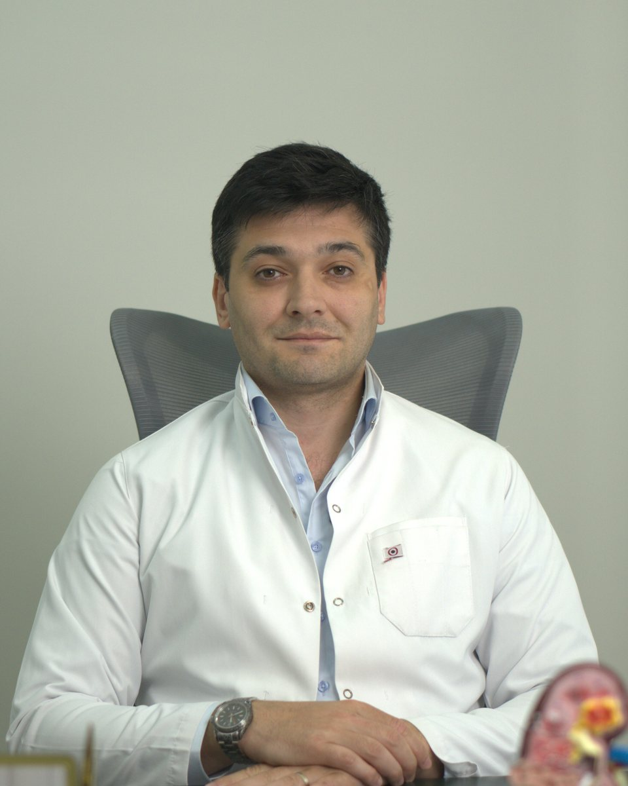

Böyüklər və uşaqlar üçün uroloji müayinə, diaqnostika və cərrahi müalicə
Uroloji və androloji xəstəliklərin müayinəsi, diaqnostikası və müalicəsi. Endoskopik, rekonstruktiv, andrologik və uşaq uroloji cərrahi müdaxilələr.

Dr. Xaliq Rzayev böyüklərdə və uşaqlarda uroloji xəstəliklərin müayinəsi, diaqnostikası və müalicəsi üzrə fəaliyyət göstərən uroloq-androloqdur.
Rusiyanın Stavropol Dövlət Tibb Universitetində ali tibb təhsili almış, daha sonra urologiya-andrologiya ixtisası üzrə klinik ordinatura keçmişdir.
Peşəkar fəaliyyətində böyrək və sidik yollarının daş xəstəlikləri, kişi reproduktiv sağlamlığı, prostat və xaya xəstəlikləri, uşaqlarda anadangəlmə uroloji patologiyalar, endoskopik və rekonstruktiv cərrahi müdaxilələr əsas istiqamətlərdəndir.
Yerli və beynəlxalq tibbi konfransların, simpoziumların və ixtisasartırma proqramlarının iştirakçısıdır. Urologiya sahəsində elmi məqalələrin müəllifi və müxtəlif elmi tədbirlərdə məruzəçidir.
Şikayətlərin dəqiq araşdırılması, müasir diaqnostika və fərdi müalicə planı.
Rusiya Federasiyası · Fakültə: Müalicə işi
Rusiya Federasiyası · İxtisas: Urologiya-Andrologiya · Klinik ordinatura
Zəng edin və ya WhatsApp-a yazın — sizin üçün uyğun vaxtı təyin edək.